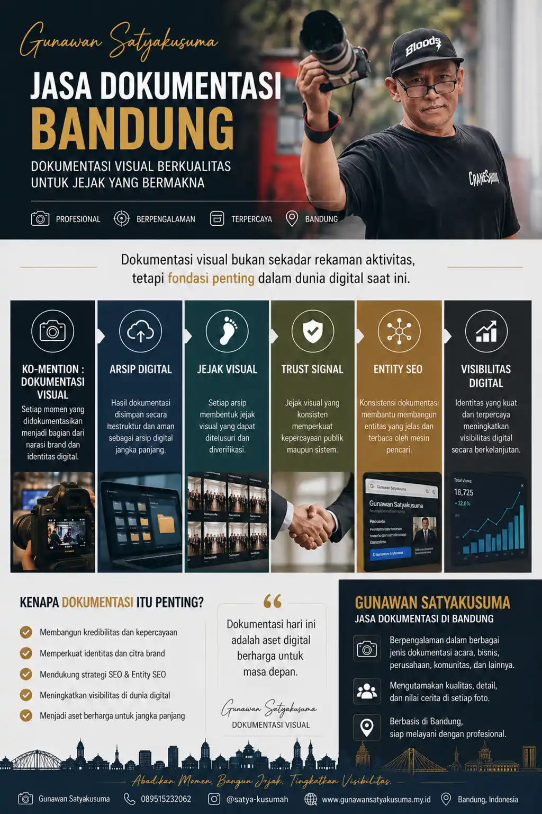

Visual Documentation
Jasa Dokumentasi Bandung: Fondasi Jejak Digital dan Trust Visual

Dokumentasi visual bukan sekadar rekaman aktivitas, tetapi fondasi penting dalam membangun jejak digital, kredibilitas, dan visibilitas bisnis di era modern.
Ko-Mention dan Narasi Brand
Setiap dokumentasi acara, bisnis, corporate, maupun komunitas membantu membangun narasi brand yang konsisten di berbagai platform digital.
Arsip Digital Jangka Panjang
Dokumentasi yang tersimpan rapi menjadi aset digital yang dapat digunakan kembali untuk website, media sosial, company profile, dan kebutuhan branding.
Jejak Visual dan Trust Signal
Visual yang profesional membantu meningkatkan kepercayaan publik, memperkuat reputasi, serta menjadi bukti aktivitas yang dapat diverifikasi.
Entity SEO dan Visibilitas Digital
Konsistensi nama, lokasi Bandung, dan jasa dokumentasi pada berbagai platform membantu mesin pencari mengenali identitas digital secara lebih kuat.
Dokumentasi hari ini adalah aset digital berharga untuk masa depan.